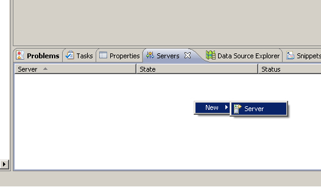
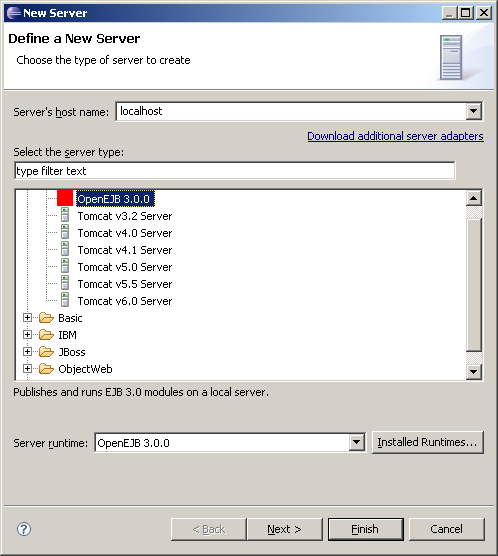
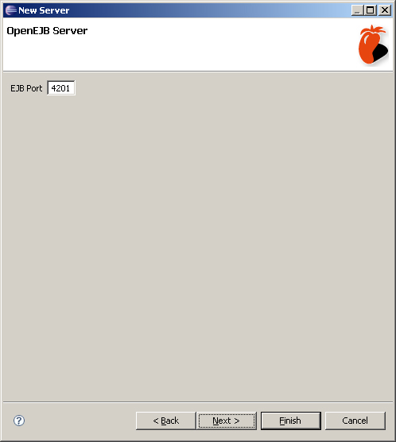

Before continuing, you should have OpenEJB installed on your machine, and have a runtime configured
Open the Servers view (if it isn't already), and right click and select New->Server.
Select OpenEJB 3.0.0 from the Apache category, ensure you have the OpenEJB runtime selected, and click Next.
Select the EJB port for the server, and select Finish.